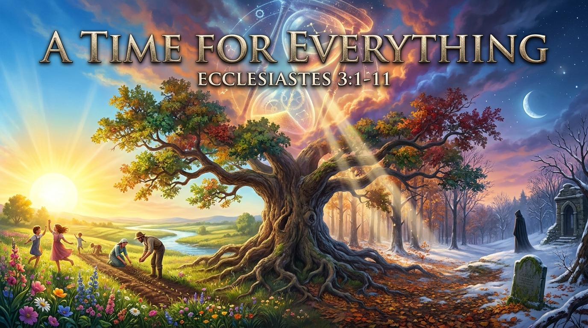

親愛的弟兄姊妹，我們的一生總是在追趕時間。今天，我們要一同探討：「在永恆與虛空之間：看見神完美的時間表」。
神造萬物，各按其時成為美好，又將永生安置在世人心裡。
不要讓「日光之下」的勞碌蒙蔽了你的雙眼。讓我們接受生命的節期，降服於神的主權，並將盼望定睛於永恆。

「神造萬物，各按其時成為美好。」
主啊，祢是昔在、今在、以後永在的全能神，在祢手中掌管著宇宙的運作與時間的更迭。當我們在「日光之下」感到迷茫、勞苦與虛空時，求祢開我們的雙眼，讓我們看見祢為生命所定的完美季節。賜我們順服的智慧，在該擁抱時熱情，在該放手時安息；更求祢喚醒我們靈魂深處對「永恆」的渴望，使我們不再被短暫的事物所轄制，而是將盼望錨錠於祢的應許之中。奉主耶穌基督的聖名祈求，阿們。
經文：傳道書 3:1-4
關鍵問題：為什麼我們對生活感到焦慮？
因為試圖在「哭泣的季節」強求跳舞。承認神的主權，才能得著安息。
司布真：「主所定的時間，沒有一個不是完美的。」
親愛的弟兄姊妹，我們的一生總是在追趕時間。今天，我們要一同探討：「在永恆與虛空之間：看見神完美的時間表」。
神造萬物，各按其時成為美好，又將永生安置在世人心裡。
不要讓「日光之下」的勞碌蒙蔽了你的雙眼。讓我們接受生命的節期，降服於神的主權，並將盼望定睛於永恆。